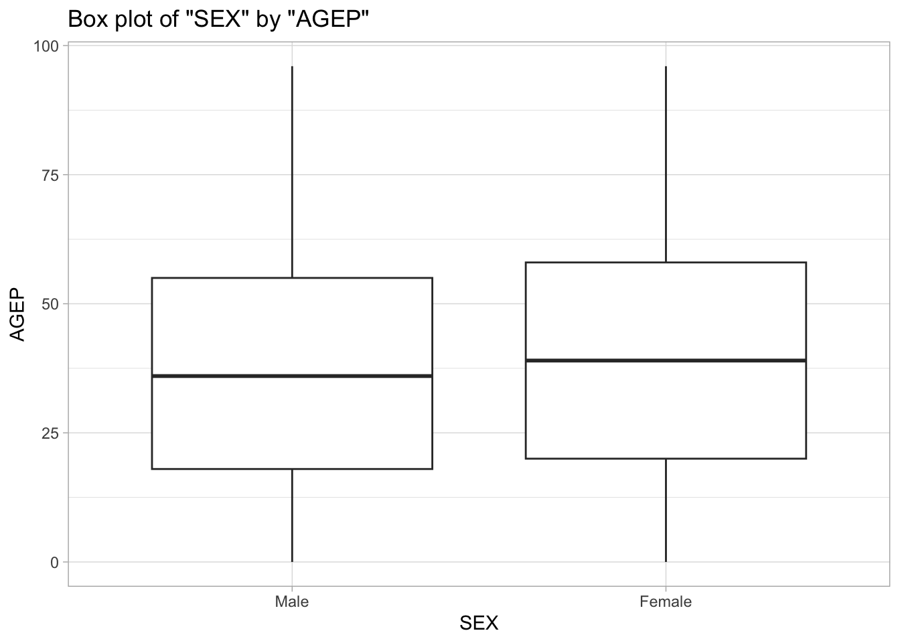
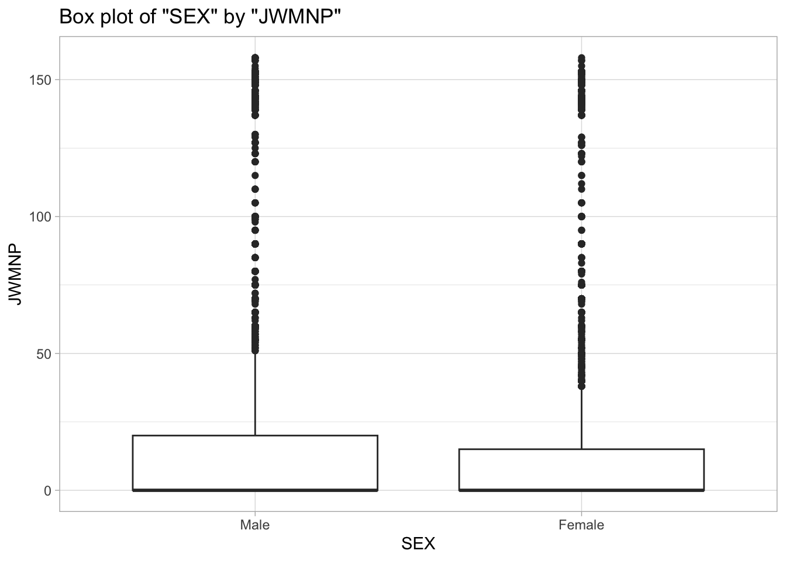

The American Community Survey’s Public Use Microdata Sample (ACS PUMS) via the Census API releases data that we want to develop into a robust and reprodubicle pipeline for aquiring person-level data. We want to functionalize the process so we can repeat the API calls and return them in a clean and useable format. We construct a pipeline, inhest the JSON formatted data into a tabluar format suitable for downstream web based graphics in an automated fashion.
We approach this through three pillars: 1) Validation: For inputs and API components. 2) API Subsetting: For data to maximize workflows and analysis. 3) Functionalization: Around components and pipelines.
Our end goal remains a small production style foundation for nascent data exploration and analysis. APIs typically bring tremedouns functionality to organizations. However, there are many instances where too much data or functions can impact the data analysis and thus the statistical work in which we need to build.
What are we Building
We are delivering a package style R foundation for data exploration and analysis. Our code does: 1) Writes valid API URLs to API data querying. 2) Pulls JSON payloads and converts to formatted tibbles. 3) Applies respective survey weights in plottting function. 4) Develops helper functions to assist in data formatting, aggregation and querying. 5) Scales to years and georgraphies relative to data requirements.
Key Architecture Features
URL Functions
Input Helpers/Functions
Plotting Functions
Assumptions
Years Allowed: Only allows for year ranges of 2010-2022 and throws an error if not. Surveys: Single yeatr estimates preffered. Variables: Numeric variables requested. Geography: Specific code for region and time weights.
Note: The U.S. Census Bureau did not release 2020 one-year ACS PUMS data due to pandemic-related sampling disruptions. Therefore, our functions restrict valid years to 2010–2019 and 2021–2022.
High-Level Motivation
We built this pipeline to demonstrate how to turn the ACS PUMS endpints into a reproducible dataset suitablke for data exploration and analysis. We have enforced input validations by factoring URL and standarizing the JSON payloads. These pieces get passed into the tibble includuing factors, weights and other attributes. We have created this in a transparent manner via Guthub to show the larger thinking and development process.
Sources: Data: U.S. Census Bureau. ACS PUMS Microdata
#Loading librarites required in the project work library(httr)library(jsonlite)library(tibble)library(dplyr)
Attaching package: 'dplyr'
The following objects are masked from 'package:stats':
filter, lag
The following objects are masked from 'package:base':
intersect, setdiff, setequal, union
The following object is masked from 'package:hms':
hms
The following objects are masked from 'package:base':
date, intersect, setdiff, union
Helper Function
Helper function builds the Census API URL for us. Instead of manually typing out long, messy API calls, this function takes in things like year, numeric variables, categorical variables, and geography level, then puts it all together into a clean URL we can query. Behind the scenes, it does a few extra checks to make sure we don’t accidentally ask for something invalid. For example, it only allows survey years between 2010–2022, makes sure PWGTP (the weight variable) is always included, and confirms that any geographic subsets match up with the type of geography we picked (like not mixing up Region codes with State FIPS codes). By default, we set the geography subset to state code 01 (Alabama), since our group was assigned that state. But the user can always override this if they want to look at a different state. In short: this function keeps our queries valid, reproducible, and a lot less error-prone. We’ll lean on it every time we want to pull in new PUMS data.
# Build API URL with server‑side filters.load_pums_url <-function(year =2023,numeric_vars =c("AGEP"),categorical_vars =c("SEX"),geography_level =c("All","Region","Division","State"),geography_subset =list(ST =1),survey ="acs1",key =NULL) { geography <-match.arg(geography_level) subset <- geography_subset key_safe <-if (is.null(key)) ""elseas.character(key)# --- simple constants ---------------------------------------------------------.valid_numeric <-c("AGEP", "GASP", "GRPIP", "JWAP", "JWDP", "JWMNP", "PWGTP").valid_categorical <-c("FER", "HHL", "HISPEED", "JWTRNS", "SCH", "SCHL", "SEX").valid_geos <-c("All", "Region", "Division", "State").valid_region_codes <-c(1, 2, 3, 4).valid_division_codes <-1:9.valid_state_fips <-c(1,2,4,5,6,8,9,10,11,12,13,15,16,17,18,19,20,21,22,23,24,25,26,27,28,29,30,31,32,33,34,35,36,37,38,39,40,41,42,44,45,46,47,48,49,50,51,53,54,55,56)# --- year ---------------------------------------------------------------------.allowed_year <-function(x) {is.numeric(x) &&length(x) ==1L &&!is.na(x) && x >=2010&& x <=2022}# Validate year validate_year <-function(year) {if (!is.numeric(year) || year <2010|| year >2022)stop("year must be between 2010 and 2022")as.integer(year)}# Skip unavailable variables by yearif (year <2019&&any(c("JWTRNS", "HISPEED") %in% categorical_vars)) {warning("JWTRNS and HISPEED only available for 2019 - 2022. Removing them from this query.") categorical_vars <-setdiff(categorical_vars, c("JWTRNS", "HISPEED"))}# --- variables ----------------------------------------------------------------process_numeric_vars <-function(numeric_vars =c("AGEP", "PWGTP")) {if (!is.character(numeric_vars)) stop("numeric_vars must be character")# ensure PWGTP presentif (!"PWGTP"%in% numeric_vars) numeric_vars <-c(numeric_vars, "PWGTP")# check allowedif (!all(numeric_vars %in% .valid_numeric))stop("numeric_vars contains invalid names")# need at least one other than PWGTP others <-setdiff(numeric_vars, "PWGTP")if (length(others) ==0) stop("include at least one numeric var other than PWGTP")unique(numeric_vars)}process_categorical_vars <-function(categorical_vars =c("SEX")) {if (!is.character(categorical_vars)) stop("categorical_vars must be character")if (!all(categorical_vars %in% .valid_categorical))stop("categorical_vars contains invalid names")unique(categorical_vars)}# --- geography ----------------------------------------------------------------validate_geo <-function(geography) {if (!is.character(geography) ||length(geography) !=1L)stop("geography must be a single string")if (!(geography %in% .valid_geos))stop("geography must be one of All, Region, Division, State") geography}# --- subset -------------------------------------------------------------------# subset like: list(REGION = c(1,2), DIVISION = 9, ST = c(36,42))validate_subset <-function(subset, geography) {if (is.null(subset) ||identical(subset, list())) return(list())if (!is.list(subset) ||is.null(names(subset)))stop("subset must be a named list") allowed_keys <-c("REGION", "DIVISION", "ST") bad <-setdiff(names(subset), allowed_keys)if (length(bad) >0) stop("subset has invalid names")# coerce to integer and dedupe subset <-lapply(subset, function(v) unique(as.integer(v)))# light checksif (!is.null(subset$REGION)) {if (any(is.na(subset$REGION)) ||any(!subset$REGION %in% .valid_region_codes))stop("REGION must be in 1,2,3,4") }if (!is.null(subset$DIVISION)) {if (any(is.na(subset$DIVISION)) ||any(!subset$DIVISION %in% .valid_division_codes))stop("DIVISION must be in 1..9") }if (!is.null(subset$ST)) {if (any(is.na(subset$ST)) ||any(!subset$ST %in% .valid_state_fips))stop("ST must be valid 2-digit state FIPS") }# keep it consistent with chosen geographyif (geography =="Region"&&any(c("DIVISION","ST") %in%names(subset)))stop("for Region, only use REGION")if (geography =="Division"&&any(c("REGION","ST") %in%names(subset)))stop("for Division, only use DIVISION")if (geography =="State"&&any(c("REGION","DIVISION") %in%names(subset)))stop("for State, only use ST") subset}# Print everything with print()print(paste("year =", year))print(paste("numeric_vars =", paste(numeric_vars, collapse =", ")))print(paste("categorical_vars =", paste(categorical_vars, collapse =", ")))print(paste("geo =", geography))print(paste("subset =", subset))print(paste("key =", if (nzchar(key)) "Avaiable"else"Missing"))# compose GET fieldsget_fields <-unique(c("PWGTP", numeric_vars, categorical_vars))params <-list(get =paste(get_fields, collapse =","))if (nzchar(key_safe)) params$key <- key_safebase <-paste("https://api.census.gov/data",as.character(year), "acs", survey, "pums", sep ="/")httr::modify_url(base, query = params)}
Processing the API Response
Once the URL pulls back results, we need a way to turn the raw API response into something useful. The process_api_response() function does exactly that. First, it checks if the request worked (status code 200). Then it takes the raw JSON content, pulls out the column names, and builds a tibble we can work with. From there, it automatically converts numeric variables into numbers, categorical variables into factors with the right labels, and even does some extra cleanup for special cases like commute times (JWAP and JWDP). Basically, this function transforms messy JSON into a clean, analysis-ready dataset in one step — so we don’t have to deal with parsing and fixing every time we pull new data.
# Convert raw API JSON response to a clean tibbleprocess_api_response <-function(api_response) {if (api_response$status_code !=200) {stop("Error: API request failed with status code ", api_response$status_code) }# Convert raw content to character string content_string <-rawToChar(api_response$content)# Parse JSON data parsed_data <-fromJSON(content_string)# First row contains column names, the rest is the data column_names <- parsed_data[1, ] data_rows <- parsed_data[-1, ]# Convert to tibble tibble_data <-as_tibble(data_rows)colnames(tibble_data) <- column_names#creating new variable in order to check if variables are numeric valid_numeric_vars <-c("AGEP", "GASP", "GRPIP", "JWAP", "JWDP", "JWMNP", "PWGTP")#Created loop to convert proper numeric variables to numericfor(var incolnames(tibble_data)){if(var %in% valid_numeric_vars){ tibble_data[[var]] <-as.numeric(tibble_data[[var]]) } }# --- categorical to factors --------------------------------------------------- valid_categorical_vars <-c("FER", "HHL", "HISPEED", "JWTRNS", "SCH", "SCHL", "SEX")for (var incolnames(tibble_data)) {if (var %in% valid_categorical_vars) { tibble_data[[var]] <-as.factor(tibble_data[[var]]) } }# --- labeled factors ----------------------------------------------------------if ("SEX"%in%colnames(tibble_data)) { tibble_data <- tibble_data |>mutate(SEX =factor(SEX, labels = SEX_levels)) }if ("SCHL"%in%colnames(tibble_data)) { tibble_data <- tibble_data |>mutate(SCHL =factor(SCHL, labels = SCHL_levels)) }if ("SCH"%in%colnames(tibble_data)) { tibble_data <- tibble_data |>mutate(SCH =factor(SCH, labels = SCH_levels)) }if ("JWTRNS"%in%colnames(tibble_data)) { tibble_data <- tibble_data |>mutate(JWTRNS =factor(JWTRNS, labels = JWTRNS_levels)) }if ("HISPEED"%in%colnames(tibble_data)) { tibble_data <- tibble_data |>mutate(HISPEED =factor(HISPEED, labels = HISPEED_levels)) }if ("HHL"%in%colnames(tibble_data)) { tibble_data <- tibble_data |>mutate(HHL =factor(HHL, labels = HHL_levels)) }if ("FER"%in%colnames(tibble_data)) { tibble_data <- tibble_data |>mutate(FER =factor(FER, labels = FER_levels)) }# --- JWAP / JWDP handling -----------------------------------------------------if("JWAP"%in%colnames(tibble_data)) { tibble_data <- tibble_data |>left_join(JWAP_intervals, join_by(JWAP)) |>rename(work_arrival_time = middle_time,arrival_meridiem = meridiem) |>select(-JWAP) } #Pasting correct time values in for JWDPif("JWDP"%in%colnames(tibble_data)) { tibble_data <- tibble_data |>left_join(JWDP_intervals, join_by(JWDP)) |>rename(work_departure_time = middle_time2,departure_meridiem = meridiem2) |>select(-JWDP) } return(tibble_data)}
Handling Time Variables Some variables in the Census data represent time intervals instead of single values. For example, “time leaving for work” isn’t stored as “7:30 AM,” but rather as a range. Our process_time_variable() helper handles this problem by looking up those intervals, grabbing the start and end times, and calculating a middle point that represents the range. It then converts those values into something R can actually work with — proper time objects — so we can treat commute times consistently in our analysis. Without this step, plotting or comparing time data would be pretty much impossible.
# Function to process time variablesprocess_time_variable <-function(variable_name) {# Grabbing information from API temp <- httr::GET(paste0("https://api.census.gov/data/2022/acs/acs1/pums/variables/", variable_name, ".json")) temp_list <- temp$content |>rawToChar() |> jsonlite::fromJSON()# Getting just the variable names and their values time_values <- temp_list$values$item time_vals_sorted <- time_values[sort(names(time_values))]# Converting the values into a tibble time_tibble <-tibble(id =seq(0, length(time_vals_sorted) -1), value = time_vals_sorted)# Converting to wide format time_wide <-separate_wider_delim(time_tibble, cols =c("value"), delim =" ", names =c("start", "meridiem", "to", "end", "meridiem_2"), too_few ="debug", names_repair ="unique", too_many ="drop") # Select the needed rows and convert to usable format time_intervals <- time_wide |>select(id, start, meridiem, end, meridiem_2) |>#meridiem is to track if values were for am or pmmutate(start =parse_hm(start),end =parse_hm(end),variable_name = id) # Make row 1 display NA across all columns for row 1 time_intervals[1, ] <-NA# Creating middle time value variable time_intervals <- time_intervals |>mutate(interval = (end - start) /2,interval =as.numeric(interval),interval =as.period(interval))# Turning start into a period time_intervals <- time_intervals |>mutate(start =as.period(start),middle_time =as.duration(start + interval)) |>select(middle_time, variable_name, meridiem) # Turning the first row variable back to 0 time_intervals[1, 2] <-0# Converting back to a time variable time_intervals <- time_intervals |>mutate(middle_time = hms::hms(seconds = middle_time))return(time_intervals)} #Renaming variables to insure they work in the helper functionJWAP_intervals <-process_time_variable("JWAP")
Warning: Debug mode activated: adding variables `value_ok`, `value_pieces`, and
`value_remainder`.
Similarly, categorical variables come in as numeric codes that don’t mean much by themselves. The process_cat_variable() function looks up the dictionary of values for each categorical variable (like SEX, SCHL, HISPEED, etc.) and returns the proper labels. That way, instead of staring at “1” and “2” for gender, we immediately see “Male” and “Female.” This small step makes plots, summaries, and any kind of interpretation way more readable.
# Function to process categorical variablesprocess_cat_variable <-function(variable_name) {# Grabbing information from API temp <- httr::GET(paste0("https://api.census.gov/data/2022/acs/acs1/pums/variables/", variable_name, ".json")) temp_list <- temp$content |>rawToChar() |> jsonlite::fromJSON()# Getting just the variable names and their values cat_values <- temp_list$values$item cat_vals_sorted <- cat_values[sort(names(cat_values))]# Converting the values into a tibble cat_tibble <-tibble(id =seq(0, length(cat_vals_sorted) -1), value = cat_vals_sorted) cat_vector <- cat_tibble$valuereturn(cat_vector)}#Running function for categorical variables to store levelsSCHL_levels <-process_cat_variable("SCHL")SEX_levels <-process_cat_variable("SEX")SCH_levels <-process_cat_variable("SCH")JWTRNS_levels <-process_cat_variable("JWTRNS")HISPEED_levels <-process_cat_variable("HISPEED")HHL_levels <-process_cat_variable("HHL")FER_levels <-process_cat_variable("FER")
Now that we have done some setup we need to start creating the function that will be accessing the API for us. The first step will be to provide some defaults for the year, numeric variables, categorical variables, and geography levels. Then we will include the functions that validate if the user chose the correct variables, after that we will create the base URL, then the paste function that will paste the choosen variables into the query. The GET() function will then be used to access the API and if that is successful the data will be processed with our helper function into a nice looking tibble.
Now that we have validated that our query is working properly we now need to add on the ability for the user to query multiple years. In order to do this we will make a new query function that creates a loop for each year as specified by the user, and runs said loop through our initial query function in order to get data for each year. This new year data will be added to our tibble with the bind_rows() function.
# Function for multiple yearsquery_multiple_years <-function( years,numeric_vars =c("AGEP", "PWGTP"),categorical_vars =c("SEX"),geography_level ="All",geography_subset =NULL,survey ="acs1",key =NULL) { all_years_data <-list()for (yr in years) {# validate year inside loopif (yr <2010|| yr >2022) {warning(paste("Skipping invalid year:", yr))next }# Build URL for single year url <-.load_pums_url(year = yr,numeric_vars = numeric_vars,categorical_vars = categorical_vars,geography_level = geography_level,geography_subset = geography_subset,survey = survey,key = key )# Fetch raw API response resp <- httr::GET(url) httr::stop_for_status(resp)# Process into cleaned tibble tbl <-process_api_response(resp)# Add year column so you know which year rows came from tbl$year <- yr# Save in list all_years_data[[as.character(yr)]] <- tbl }# Combine into single tibble final_data <-bind_rows(all_years_data)class(final_data) <-c("census", class(final_data))return(final_data)}
Testing the multi-year query to see if it is working correctly:
Warning in .load_pums_url(year = yr, numeric_vars = numeric_vars,
categorical_vars = categorical_vars, : JWTRNS and HISPEED only available for
2019 - 2022. Removing them from this query.
Warning: The `x` argument of `as_tibble.matrix()` must have unique column names if
`.name_repair` is omitted as of tibble 2.0.0.
ℹ Using compatibility `.name_repair`.
JWTRNS and HISPEED only available for 2019 - 2022. Removing them from this
query.
The summary.census() function is our custom summary tool for any tibble that comes back from the Census API. By default, it calculates weighted means and standard deviations for numeric variables (like age or commute minutes) and counts for categorical ones (like sex or education level). The key part is the weights: the Census uses PWGTP to scale each record up to the population level. Without it, our summaries would be misleading. This function bakes the weighting logic in, so every summary we produce reflects actual population estimates, not just the raw sample.
# Define custom summary function for the 'census' class# Weighted summary function for census objects# Returns list with weighted means and SDs (numeric) and weighted counts (categorical)summary.census <-function(census_data, numeric_vars =NULL, categorical_vars =NULL) {# Ensure PWGTP exists and is numericif (!"PWGTP"%in%names(census_data)) {stop("Weight variable 'PWGTP' is missing from the dataset.") }# Separate numeric and categorical columns from the dataif (is.null(numeric_vars)) { numeric_vars <-names(census_data)[sapply(census_data, is.numeric) &names(census_data) !="PWGTP"] }if (is.null(categorical_vars)) { categorical_vars <-names(census_data)[sapply(census_data, is.factor)] }# Weighted mean and standard deviation calculations summarize_numeric <-function(var_name, data) { numeric_vector <-as.numeric(data[[var_name]]) weight_vector <-as.numeric(data[["PWGTP"]])# Check for missing values in the weight vectorif (any(is.na(weight_vector))) {stop("Missing values found in the weight variable 'PWGTP'.") }# Calculate weighted mean weighted_mean <-sum(numeric_vector * weight_vector, na.rm =TRUE) /sum(weight_vector, na.rm =TRUE)# Calculate weighted standard deviation weighted_var <-sum(numeric_vector^2* weight_vector, na.rm =TRUE) /sum(weight_vector, na.rm =TRUE) weighted_sd <-sqrt(weighted_var - weighted_mean^2)return(list(mean = weighted_mean, sd = weighted_sd)) }# Initialize a list to store the summary results summary_list <-list()# Summarize numeric variablesfor (var in numeric_vars) { summary_list[[var]] <-summarize_numeric(var, census_data) }# Summarize categorical variables (weighted counts)for (var in categorical_vars) { w <-as.numeric(census_data$PWGTP) summary_list[[var]] <-tapply(w, census_data[[var]], sum, na.rm =TRUE) }return(summary_list)}
Plotting Function
Finally, we wrote a plot.census() function to visualize the data. It makes a weighted boxplot for any numeric variable by any categorical variable, using the survey weights in the background. This keeps the plots aligned with how the Census wants the data to be represented. Together with the summary function, this gives us a quick way to explore patterns in the data without having to rewrite ggplot code every time.
plot.census <-function(tibble_data, categorical_var, numeric_var) {#Telling user they must specify at least one categorical variableif (missing(categorical_var) ||missing(numeric_var)){stop("Must include one categorical variable and one numeric variable") }#Telling user time variables can not be use as numeric variablesif ("JWAP"%in% numeric_var){stop("JWAP is a time variable") }if ("JWDP"%in% numeric_var){stop("JWDP is a time variable") } p <-ggplot(tibble_data, aes(x =get(categorical_var), y =get(numeric_var), weight = PWGTP)) +geom_boxplot() +labs(title =paste("Box plot of", deparse(substitute(categorical_var)), "by", deparse(substitute(numeric_var))), x = categorical_var, y = numeric_var) +theme_light() print(p)}
# Take a reproducible sample of 10,000 rowsset.seed(123) # ensures reproducibilitymulti_year_sample <- dplyr::sample_n(multi_year_result, 100000)# Now plot using the sampleplot.census(multi_year_sample, "SEX", "AGEP")

#plot.census(multi_year_result, "SEX", "AGEP")
Census API Investigation
Now that we have created our functions and API query, we can analyze some data.
In this example, we’ll explore commute time patterns in North Carolina using the variable JWMNP (commute minutes) and compare them by SEX.
This lets us investigate whether men and women have different average commute times or variability in travel behavior.
# Investigation: Commute Times by Sex # Query commute minutes by sex for 2022, NC (state FIPS 37 as example)commute_query <-query_multiple_years(years =c(2022), numeric_vars =c("AGEP", "JWMNP", "PWGTP"), categorical_vars =c("SEX"), geography_level ="State", geography_subset =list(ST =37), # NC (FIPS 37)survey ="acs1",key ="2c10d8b7f4f3ca11ddef8ced42f41817fa34d9f7")
# Weighted summary of commute times by sexcommute_summary <-summary.census(commute_query, numeric_vars =c("JWMNP"),categorical_vars =c("SEX"))commute_summary
# Weighted boxplot of commute minutes by sexset.seed(234) # ensures reproducibilitycommute_query_sample <- dplyr::sample_n(commute_query, 100000)# Now plot using the sampleplot.census(commute_query_sample, "SEX", "JWMNP")

#plot.census(commute_query, "SEX", "JWMNP")
From the weighted summary, we can see the mean and standard deviation of commute minutes for men and women, properly adjusted with the PWGTP weights. This ensures the values represent the population, not just the raw sample.
From the summary, the mean commute time in North Carolina is approximately 10.8 minutes, with a standard deviation of 19.3 minutes, indicating a wide spread in commute durations. The weighted counts show that the ACS PUMS data represent about 1.66 million males and 1.72 million females in the population. These are weighted population estimates, not raw sample sizes, because each observation is scaled using the Census PWGTP person weight.
The weighted boxplot gives a visual comparison of commute times across sexes. The medians are often similar, but the spread can differ: in many states, one group shows slightly more long-distance commuters, reflected in the longer tails of the boxplot.